Welcome to the exciting world where your favorite drinks meet iconic pop culture! Discover how the concept of “Beverages + IP Products” has become a powerful trend, especially in the Chinese beverage market. New-style tea houses in China are reinventing the beverage experience by partnering with trending IPs (intellectual properties), creating exclusive products that resonate with the hearts of younger consumers.
What is a New-Style Chinese Beverage Brand?
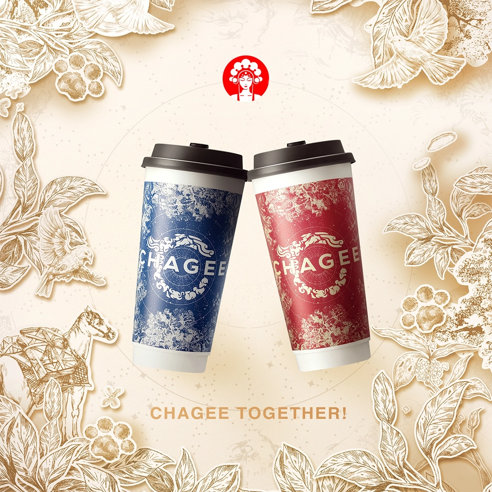
China's new-style tea drink is a combo of traditional tea culture with modern tech, and it's become super popular in China recently.
It's way more innovative than traditional tea drinks, with new raw materials, production processes, product forms, and ways to consume it.
What makes new-style tea drink?
High-quality tea (like oolong, black or green) as the base
All sorts of other ingredients like fresh fruits, dairy, plant proteins, and natural spices
Different flavours through scientific blending and processing
Cold extraction technology to keep tea's natural aroma and nutrients
Reducing the bitter and astringent flavour
Use modern equipment and standard processes, with a focus on health and quality
Not just classic milk tea and fruit tea: milk cover tea, bubble tea, smoothie tea
Tea drink brands like Heytea, Chagee, Goodme, and so on, often use unique branding, cultural ideas, and marketing strategies to appeal to young consumers.
They promote a fashionable and healthy attitude towards life and meet the immediate consumption needs of modern life.
Tea drinkers are moving away from traditional teahouses and home consumption, and new drinkers are hitting up convenience stores, shopping malls, office buildings and other places.
Takeaway platforms are booming as people want their drinks fast. The industry is moving towards 'quality, health and youth', and the market is growing.
Tea has become more than just a drink, it's a cultural phenomenon that shows how China's younger generation is mixing tradition with modernity.
It's also helping to spread Chinese tea culture around the world.
The Power of IP Collaborations
Before exploring the collaboration activities between the IP and beverage shop, we should first be sure about what is the IP.
Intellectual Property originally meant ‘intellectual property', but in the contemporary commercial and pan-cultural context.
Its connotation has been expanded to include cultural symbols with cross-media scalability, emotional resonance, and long-term commercial value.
According to application scenarios and forms of expression, IP can be divided into the following core types:
1. Content-based IP Taking the story or worldview as the core, it builds a complete narrative system through literature, film and television, animation, and other carriers, with strong extensibility and user stickiness.
Story IPs: Tomb Raider's Notes, Dragon Raja
Rely on plot tension and character growth to attract audiences.
Worldview IPs: Harry Potter, A Song of Ice and Fire
Forming immersive experience through the fictional time and space system and social rules.
Cultural IPs: Forbidden City, Dunhuang
Based on traditional cultural elements, and reconfigure the cultural identity through youthful expression.
2. Image-based IP With visual symbols or characters as the core, relying on image recognition rather than complex narratives to drive commercial value.
Portrait IPs: Molly of Pop Mart, Mickey Mouse of Disney -- quickly attract users through cute or iconic designs
Personal IPs: Hatsune Miku (virtual idol) -- maintain their vitality through character labels or fan co-creation.
3. Functional IP Oriented to solve specific needs -- mostly created by the brand itself, serve as a figurative carrier of brand values.
Brand IP: Tmall's cat head symbol, Jingdong's Joy dog
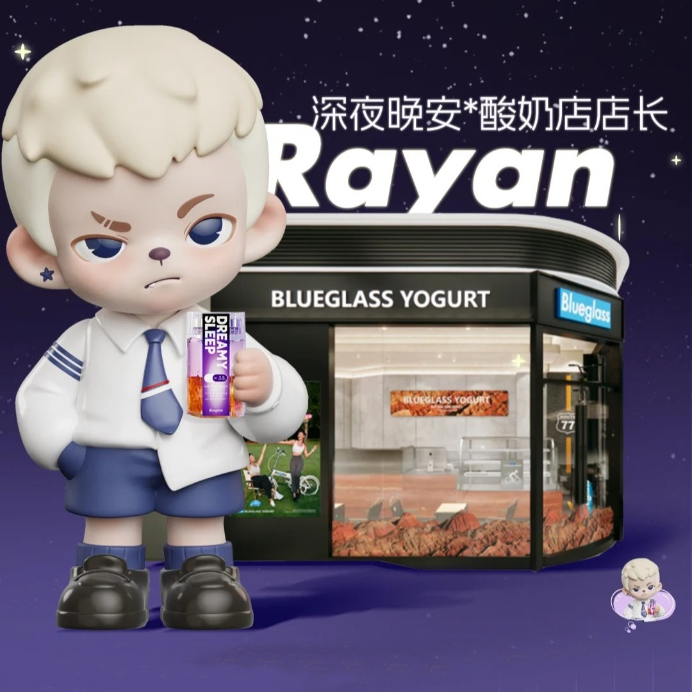
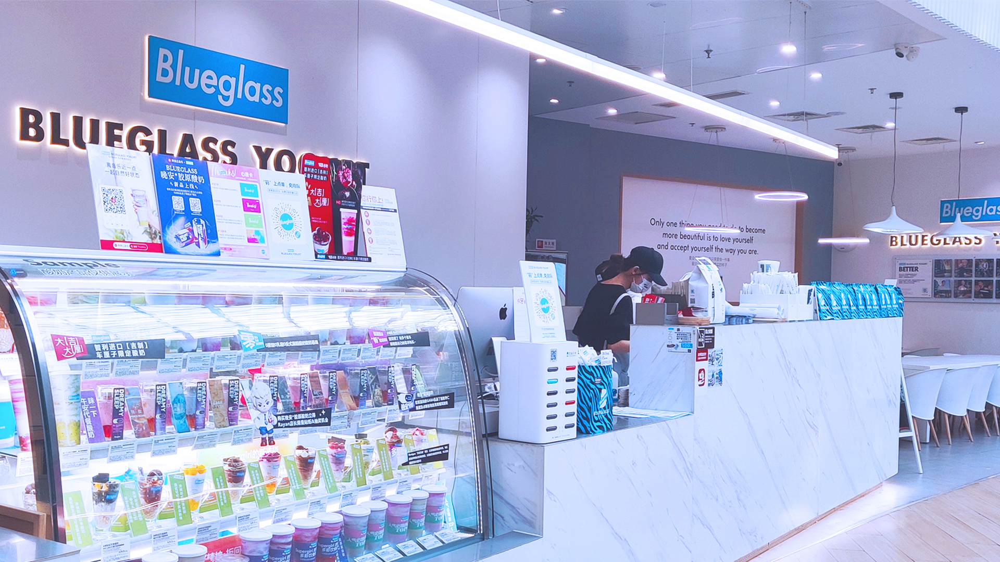
IP collaborations, whether with anime characters, celebrities, or gaming franchises, are changing the landscape of brand engagement.
By collaborating with beloved cultural icons, tea brands can tap into existing fanbases and create highly personalized, limited-edition products.
These collaborations bring fresh excitement to the product offering, creating a sense of exclusivity and emotional connection.
Why Young Consumers Are Drawn to Co-Branding
Co-branding strategies connect young people's love for iconic pop culture with their desire for unique, shareable experiences.
IP collaborations are more than just products; they represent an emotional bond.
The experience of sipping a drink alongside the excitement of owning a piece of your favorite character or show is unparalleled.
For many young consumers, it's about nostalgia, fandom, and self-expression.
The idea behind the partnership between tea brands and IPs is to create emotional connections through the combination of cultural symbols.
Three main types of activities:
1. In-depth binding of products and experiences Launching co-branded limited drinks or integrating IP visual symbols into packaging.
2. Creating immersive spaces Themed shops – e.g. decorated space linked to Dream of Red Mansions
Digital interactive technologies such as AR code scanning and voice cup lids, which let consumers 'unlock' IP episodes or characters' voices while drinking tea
3. Limited, IP-related products Goods such as badges, acrylic stand, cards or code for in-game gears.
At the heart of this kind of partnership is a twofold transformation: of emotional value and traffic value.
On the one hand, the cultural identity of the IP can elevate tea from functional consumption to 'emotional consumption'.
Sometimes pop-up stores around the world offer a wide variety of different items, and deep fans will even make special trips to co-branded events in other cities to collect these goods.
For fans, a cup of milk tea with a character from the game can be a 'payment for love', which makes the premium space of the product much more valuable.
e.g., the co-branding of 'Love in the Light of the Night' increased the sales of Heytea by 300% in a single day.
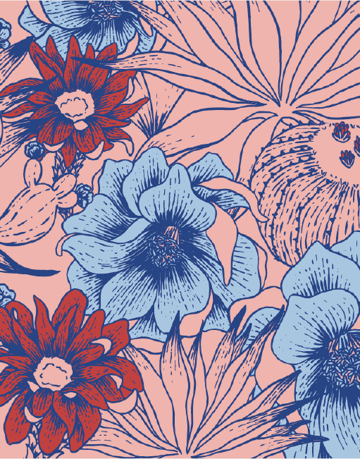
On the other hand, co-branding lets you reach new audiences.
IP gets the word out through regular use, and it fits well with brands wanting to seem young and modern, turning consumption on its head.
It's not just about the taste; it's also a way for young people to express their identity and be part of the circle culture.
This combination of 'product + content + experience' could be the key to helping some brands breakthrough in this new consumer era.
Sample: Collaboration activities
Cross-Brand Collaborations in Action
Collaborating with brands from different industries—whether gaming, music, or entertainment—has become a defining marketing trend.
By leveraging brand synergies, companies are able to reach new audiences, drive consumer excitement, and boost sales.
Let's explore some key successful IP collaboration cases:
• Naixue's Tea x Hatsune Miku The collaboration between Naixue's Tea and Hatsune Miku merged digital culture with tea consumption by launching limited-edition drinks like the "Berry Future Sparkle Cup" with holographic packaging and themed NFC music cards.
Exclusive merchandise, including collectible character badges and stage-inspired acrylic stands, drove fan engagement, with social media buzz exceeding hundreds of million impressions.
The collaboration boosted Naixue's daily sales by nearly a quarter and expanded its audience, attracting more Gen-Z consumers and a variety of male customers—a rare demographic shift.
By transforming tea into a cultural medium, Naixue reinforced its youth-centric branding while demonstrating how virtual IPs can bridge digital fandoms and real-world consumption situations.
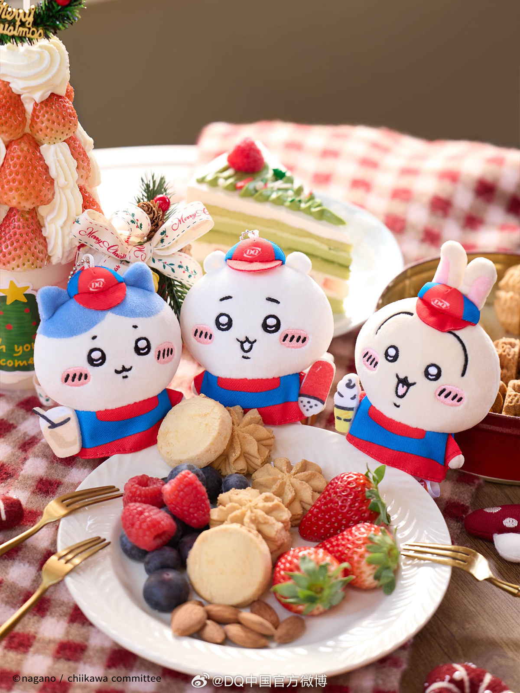
• Dairy Queen x Chiikawa: DQ (Dairy Queen), the global ice cream giant, and Chiikawa , Japan’s breakout "healing economy" IP, merged fantasy desserts with fan-driven collectibles.
Inspired by the beloved manga and anime characters—Chiikawa, Hachiware, and Usagi—DQ launched special desserts like the "Lemon Cheesecake Waffle Crunch Blizzard", paired with limited keychains, translucent cards, and fridge magnets.
To amplify immersion, DQ opened six immersive theme stores and check-in stores
nationwide, where fans could pose with life-sized character installations and redeem exclusive merchandise through purchases.
The campaign capitalized on Chiikawa’s emotional resonance and storytelling—to attract consumers seeking comfort in fast-paced urban life.
Within days, the hashtag #DQChiikawa trended on Weibo, driving a about 30% surge in foot traffic and cementing DQ’s position in leveraging ACG culture for experiential retail.
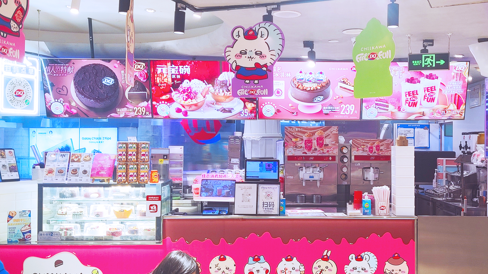
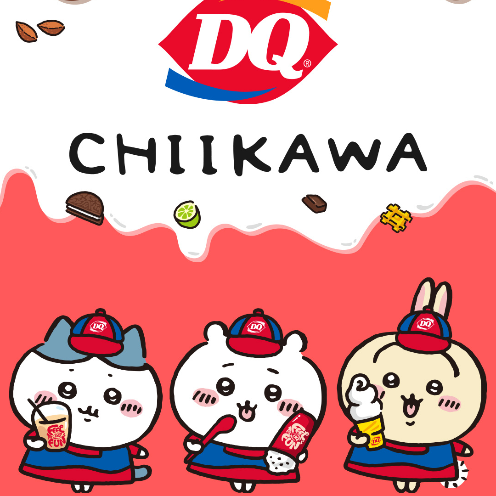
• Dairy Queen x Blue Lock: Still DQ, but with Blue Lock—a high-stakes soccer anime centered on competitive youth training.
Themed stores mimicked the anime’s training facility, complete with locker-style seating and AR screens showcasing iconic match scenes.
Fans could collect character cards, and acrylic stands with purchases, contrasting with DQ’s earlier Chiikawa collab, which emphasized pastel aesthetics and plush collectibles.
While Chiikawa targeted fans seeking whimsical comfort, Blue Lock tapped into competitive manga's energy, broadening DQ’s appeal to more deep ACG fans who love anime and manga.
This cements DQ's position in the choices of young people, especially young women, and boosts weekend sales—a testament to how IP-driven storytelling adapts to diverse audience psychographics.
• Yihetang x Water Margin Yihetang, a prominent Chinese tea brand, has reimagined Water Margin—one of China's Four Great Classical Novels—through a dynamic fusion of heritage and modernity.
This collaboration transforms the novel’s legendary heroes into contemporary pop culture icons, blending traditional storytelling with youth-centric aesthetics.
The campaign introduces collectible character cards featuring stylized illustrations, distributed via themed tea purchases, alongside innovative packaging that reveals dynamic artwork through interactive cup sleeves.
A story-driven mobile game further bridges classical narratives with digital
engagement, while limited-edition beverages like rice wine pudding drinks merge cultural motifs with modern tastes.
The collaboration not only drives sales but also elevates the brand’s cultural authority, showcasing how classical IPs can transcend time through creative reinterpretation, transforming beverage consumption into a medium for cultural storytelling and community participation.
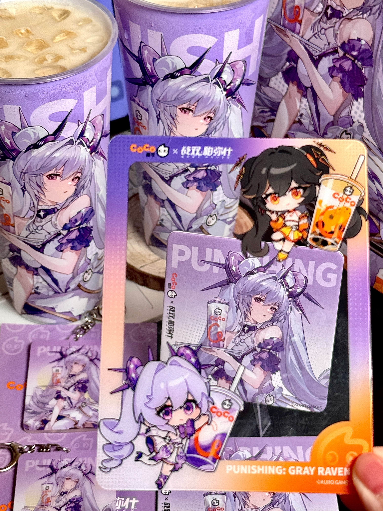
• CoCo x Gray Raven: Centered around the game's fifth anniversary, CoCo launched themed beverages like "Fresh Passionfruit Double Pop" and "Double Taro Milk Green Tea," inspired by the game's popular characters Lucia and Luna, with packaging designs reflecting their signature color aesthetics.
Offline, CoCo transformed select stores into immersive hubs where staff welcomed customers as if customers were the game's protagonist, fostering a sense of community among players.
Exclusive merchandise, including character-themed cups and collectible badges, further amplified fan engagement.
The campaign drove a surge in foot traffic among Gen-Z consumers and strengthened CoCo's brand identity as a youth-centric innovator, leveraging Punishing: Gray Raven's narrative depth and loyal fanbase to redefine experiential marketing in the beverage industry.
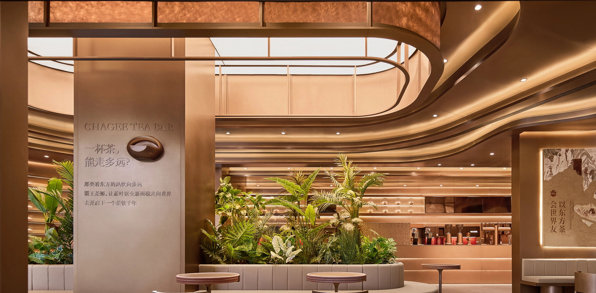
Discover: theoretical analysis
Understanding Young Consumers Through Theory: What drives young people to buy co-branded beverages? Let’s break it down using academic theories from advertising and consumer psychology.
What makes an “IP” attractive?
A successful IP collaboration relies on a dynamic marketing strategy that seamlessly blends digital engagement with real-world experiences.
Brands harness the power of platforms like Weibo, Rednote, and TikTok to build anticipation through teasers, behind-the-scenes content, and interactive campaigns.
Influencers, particularly Key Opinion Leaders and Key Opinion Consumers, play a crucial role in amplifying reach by sharing exclusive previews and authentic experiences, creating a sense of community and excitement around the collaboration.
Additionally, integrating subcultures such as anime, e-sports, and streetwear allows brands to connect with younger audiences on a deeper level, aligning products with their passions and lifestyles.
This approach not only boosts relevance but also transforms collaboration into a cultural phenomenon.
Beyond the digital realm, offline experiences are equally vital in creating lasting impressions.
Young consumers are often drawn to IP collaborations because they offer a sense of nostalgia or alignment with a subculture they identify with.
This emotional connection can significantly increase product appeal and purchase intention.
According to Washburn et al. (2000), co-branding enhances brand equity by leveraging complementary attributes, which increases perceived value.
Pop-up stores and immersive themed events bring IP collaborations to life, offering fans a tangible connection to their favorite stories and characters.
These spaces often feature limited-edition merchandise, live product launches, and interactive installations, turning a simple purchase into a memorable event.
By combining digital storytelling with physical engagement, brands foster emotional connections that go beyond traditional marketing.
This dual approach not only drives immediate sales but also builds long-term loyalty, positioning the brand as a cultural innovator in the eyes of its audience.
What makes a good co-branding: The Brand Fit
Consumer Behavior and Brand Loyalty The research finds that co-branded products, particularly in the food and beverage industry, can foster stronger emotional ties between consumers and the brands involved.
In addition, By using SNS platforms and building up fan community, brands can amplify their reach and create engaging, shareable content that resonates with their target audience.
For instance, a successful cross-brand collaboration may attract fans of the IP (such as a game or manga) and become the beverage brand's loyal consumers.
In the context of co-branding, digital marketing serves as a bridge between brands and consumers, facilitating real-time engagement and fostering a sense of community.
This emotional connection boosts brand loyalty and increases the likelihood of repeat purchases.
Market Penetration and Brand Synergy Case studies demonstrate how cross-branding increases market reach and allows for deeper penetration in niche markets, especially those that align with specific cultural or subcultural trends.
This insight can be used to highlight how IP collaborations allow beverage brands to tap into fanbases that might otherwise be difficult to reach.
The perceived fit between the two brands plays a crucial role.
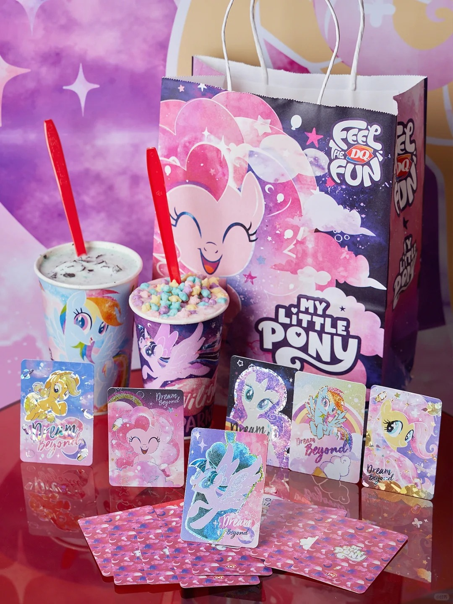
According to Wei (2023), through a partnership model where both parties cooperate, it is easier to break the stereotype about the brand image and expand the consumer market, thus increasing the commercial value of the brand and product.
What's more, Helmig et al. (2006) suggest that when the collaboration between brands is innovative and relevant, consumer attitudes are positively impacted, making the partnership more successful.
By analyzing data from digital interactions, brands can gain insights into consumer preferences and behaviors, refining their strategies to better meet the needs of their audience.
This data-driven approach ensures that co-branded campaigns are not only creative but also effective in reaching and resonating with the intended consumer base.
Extend: more about co-branding
Finding more beverage shops with co-branding activities
Here, we've curated a list of renowned tea beverage brands that are pushing the envelope with innovative IP collaborations.
Whether you're eager to explore limited-edition flavors or dive into immersive experiences that blend art and taste, these sites will take you directly to the heart of creative co-branding.
Enjoy your journey through a world where tradition meets innovation, and let your taste buds discover something extraordinary.
Japanese Collaboration Café Culture and K-pop Birthday Café
Japan's IP Collaboration Cafés: Third-Party Immersive Experiences Often run by third parties like Animate or Bandai Namco, are all about limited-edition merchandise.
With exclusive menus, character-themed décor, and collectible goods like acrylic stands or postcards, they're usually brand-led and product-centric.
Japan's model targets hardcore fans willing to pay premium prices for unique experiences.
For instance, Animate Cafés rotate themes seasonally, using unique, new IP goods and scarcity to drive foot traffic.
This approach emphasizes IP loyalty over brand visibility, creating niche cultural hubs rather than mass-market campaigns.
South Korea's K-Pop "Café Events": Fandom-Driven Engagement They prefer to mix fan experience, supporting idols with consumption in cafes.
Fans of famous idols, for instance, from HYBE and SM Entertainment work with cafés to host pop-ups celebrating album releases or member birthdays, offering photo zones, themed drinks, and fan-made products.
These events focus on emotional bonding, allowing fans to "share a moment" with idols virtually.
They mix IP with everyday life, and Korea's model is about short-term, event-based engagement, often linked to music milestones.
Korea's birthday cafés focus on making existing fans even more loyal by offering personalized content.
China's co-branding activity uses IP to give its brands a new lease of life and to appeal to mass, mixing IP goods with beverage products.
This is unique in that it combines daily shopping and dining consumption with youth trends.
Japan's ACG cafés are all about origin fandoms and focus on collectability.
Korea's birthday cafés boost the idol economy, great at meeting fans' social needs right away.
All three markets make the most of IP's emotional capital, but it's clear that regional culture has a big impact on how they make money from IP+ "drinks” or say beverages.
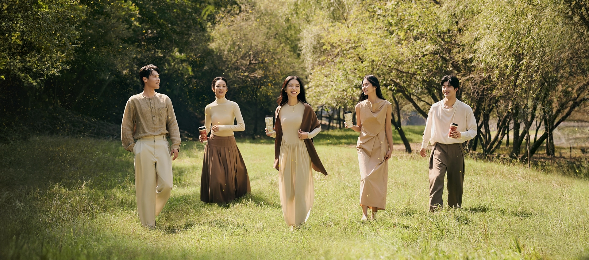
Engage: about you
Discover Your IP Collaboration Consumer Profile
Take our quick quiz to let us know your thoughts on IP collaborations. Do you prefer limited-edition collaborations or would you like to see more integration of your favorite fandoms in beverage brands? Find out what type of IP collaboration consumer you are and get tailored tips!
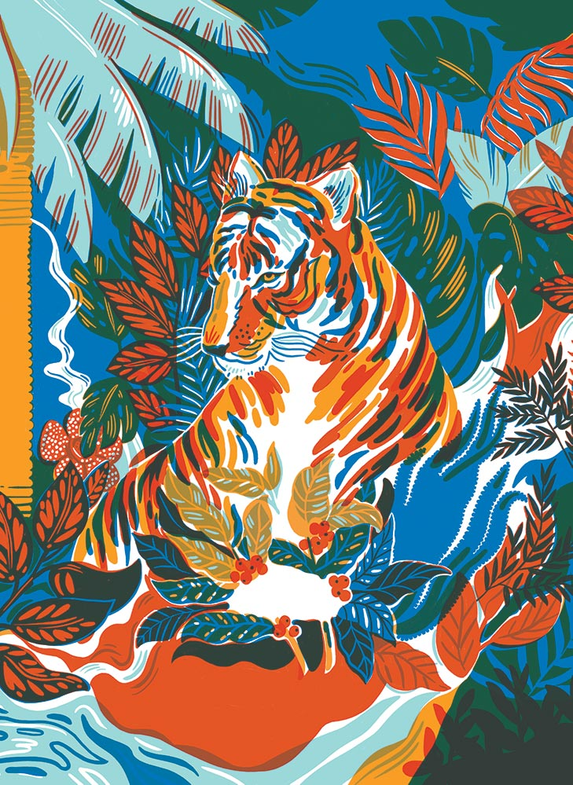
Your Result:
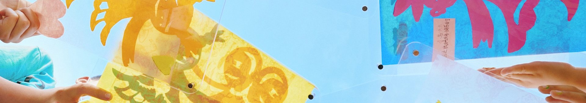
Share your idea
Share your co-branding experiences here!
Whether you’ve enjoyed a unique drink or visited a themed pop-up store, upload your content to join our community of co-branding enthusiasts.
Let’s create a virtual space to celebrate the best of pop culture and beverages.
List:
Beverages + IP Products – Cross-Brand Collaborations